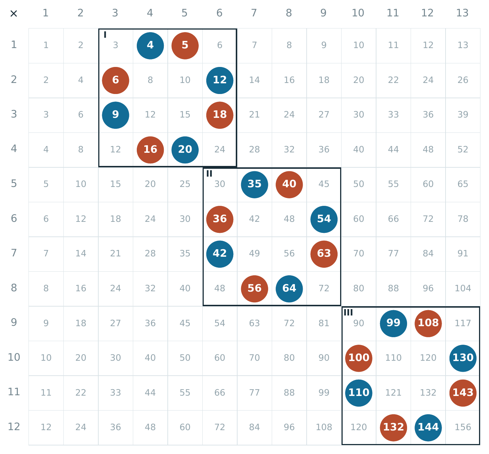
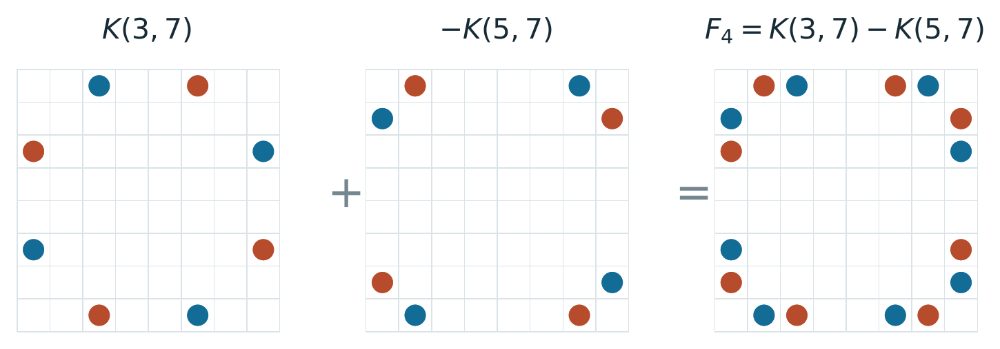
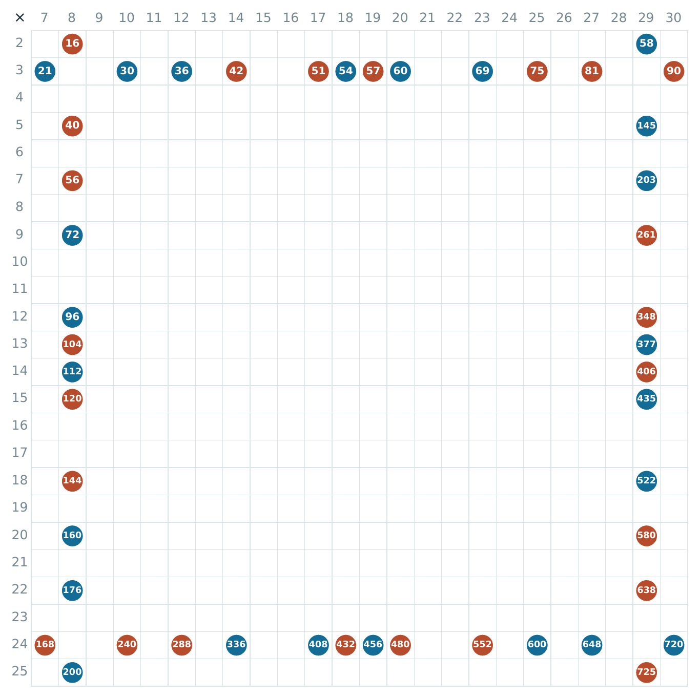
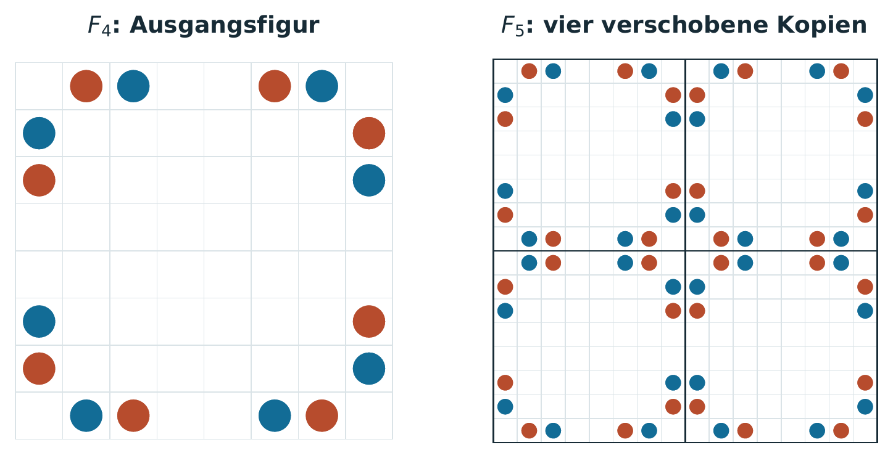
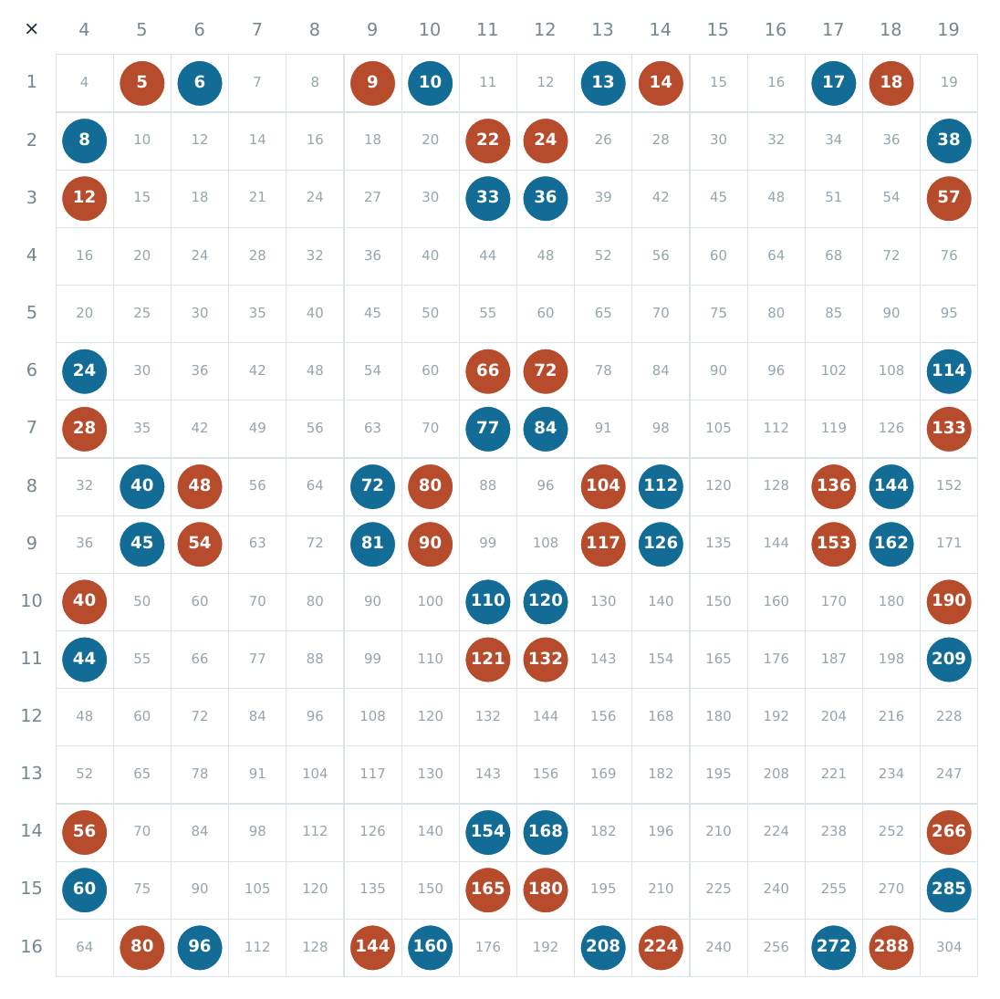
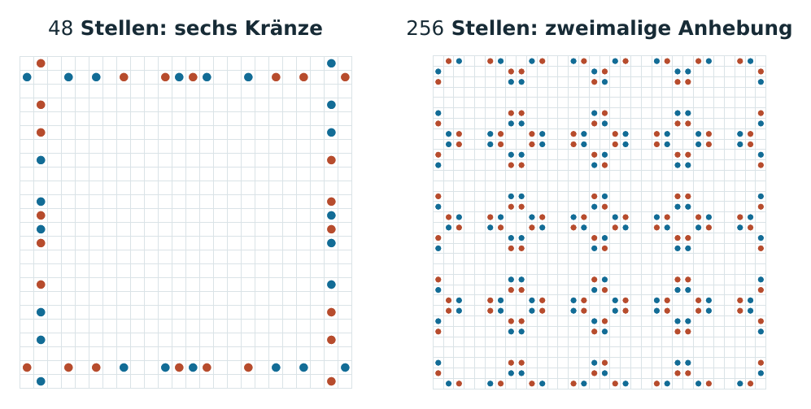
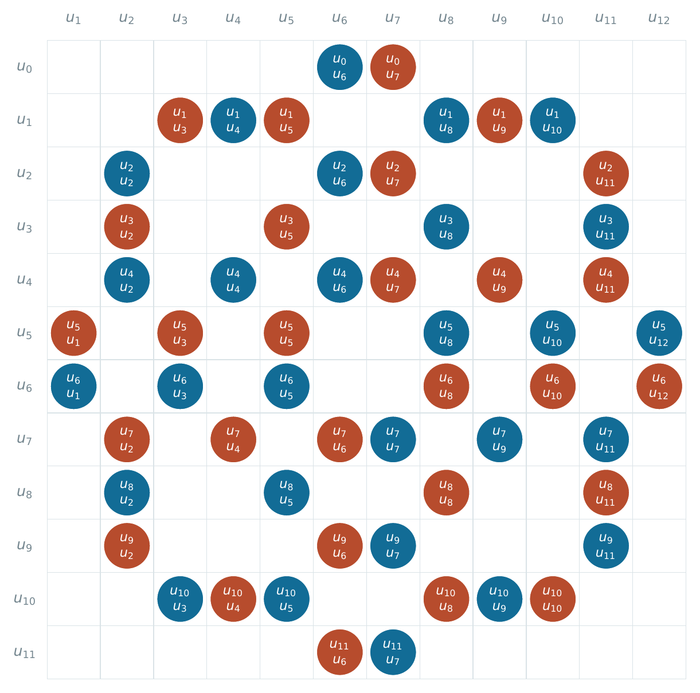

Topographische Experimente
· Notiz
Ausgangspunkt ist die Überlegung, dass eine veränderte räumliche Anordnung von Zeichen – ihre Rekonfiguration – neue mathematische Beziehungen sichtbar machen und zu neuen Resultaten führen kann. Sie knüpft an Abschnitt 6.3 „Topographie der Zeichen“ meiner Arbeit Die Oberfläche der Mathematik an.
KI ermöglicht es, sehr große Mengen von Mustern in unterschiedlichen Figurationen systematisch zu untersuchen. Mit ihrer Hilfe führte diese Überlegung zu den folgenden Fundstücken.
i) Sechseckrahmen
Ordnet man die Dreieckszahlen in Zeilen der Längen 1, 2, 3, … an, ergibt die alternierende Summe der sechs Ecken bei regelmäßigen Rahmen lageunabhängig D = r3, bei passenden Scherungen D = hr2 (h: horizontale Breite, r: Zeilenabstand). Die Figuren machen so Invarianten sichtbar und liefern systematisch neue Zahlenidentitäten.
Sechseckrahmen – alle Abbildungen
Zum Vergrößern ein Bild anklicken.


ii) Zahlenkränze
Ordnet man die Produkte natürlicher Zahlen in einer Multiplikationstafel an, liefern geeignete Kranzfiguren zwei Farbgruppen mit gleichen Potenzsummen und gleichem Produkt. Diese Gleichheiten bleiben beim Verschieben und Strecken erhalten; durch Zusammensetzen und Umfärben lassen sich immer höhere Potenzen einbeziehen. Die Figuren liefern so systematisch ganze Familien von Zahlenidentitäten zum Prouhet-Tarry-Escott-Problem.
Ein möglicher Vorläufer der Zahlenkränze ist die Arbeit von Andreas Alpers und Rob Tijdeman, The two-dimensional Prouhet–Tarry–Escott problem (2007): Sie konstruiert geometrische Gitterfiguren mit gleichen gemischten Potenzsummen, darunter eine Achtpunkt-Figur in Abschnitt 2.3.
Zahlenkränze – ausgewählte Bilder
Zum Vergrößern ein Bild anklicken. Die Werte unter jedem Bild gelten jeweils für beide Farbgruppen.

I: Summe 45, Quadratsumme 641, Produkt 8 640.
II: Summe 195, Quadratsumme 10 001, Produkt 5 080 320.
III: Summe 483, Quadratsumme 59 537, Produkt 203 860 800.

Im Zahlenfenster der Zeilen 1–8 und Spalten 4–11 sind die Potenzsummen für die Exponenten 1–4 je Farbe: 270; 14 578; 945 270; 66 119 986. Gemeinsames Produkt: 84 304 281 600.

Gemeinsames Produkt: 56 537 646 896 625 619 750 781 353 104 763 001 650 544 640 000 000 000.


Gemeinsames Produkt: 13 667 787 213 944 905 463 008 903 287 332 270 875 645 231 654 502 400 000 000.


Für u0 = 1, u1 = 2 und λ = 3 sind die Potenzsummen: 215 528 124; 17 121 056 896 772 620; 1 826 886 287 969 657 993 700 468.
Gemeinsames Produkt (in Primfaktoren): 220 · 513 · 139 · 175 · 374 · 616 · 896 · 1134 · 2336 · 4215 · 15975 · 3001 · 286574.
Das Projekt entstand im Rahmen von Überlegungen zu Terence Taos „Math 2.0“.